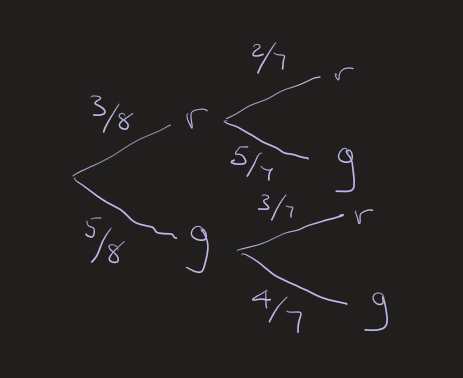

Bradley's Maths
Probability Without Replacement
GCSE all examination boards and IGCSE Cambridge (0580)
Exam Question
Amanda has a bag containing 8 sweets.
Three of them are red and the rest are green.
She takes one without looking and pops it in her mouth.
A few moments later she repeats the operation with a second sweet.
a) Calculate the probability that both the sweets are red.
b) Calculate the probability that one of them was green and the other red.
c) Calculate the probability that at least one of the sweets was green.
Before you move on to the solution or watch the video, why don't you have a go at this one yourself?
Solution
This is a fairly straightforward probability question that is likely to turn up in the middle of one of your exam papers and it can be either calculator or non-calculator. The only difficulty with this question is I haven't provided a diagram. In the exam you will usually get one that you need to fill in some of the probabilities on, but if they don't give you a tree diagram, sketch one for yourself - that is exactly what I did in the video, its quick and its simple.
The diagram is shown below:

The diagram doesn't need to be fabulous just a rough sketch like this is perfectly acceptable. There are no marks for it but it is enough to help you get full marks for the question.
Part a) asks for the probability of two reds. This is the top line in the tree and we multiply along the lines. We should remember that this is without replacement and so the second fractions have all been altered - there is one less sweet of whatever colour was taken and there is one less sweet in the bag.
$$P(r, r)= \dfrac{3}{8}\times\dfrac{2}{7} = \dfrac{6}{56} = \dfrac{3}{28}$$Part b) asks for the probability of one of each. There are two ways to take one of each sweet, first red then green or first green then red. Once again we multiply along the lines but we add between the lines
$$P(\text{one of each}) = \dfrac{3}{8}\times\dfrac{5}{7} + \dfrac{5}{8}\times\dfrac{3}{7} = \dfrac{30}{56} = \dfrac{15}{28}$$Finally in part c) we are looking for the probability of at least one of the sweets being green. There are two ways to look at this problem, the hard way is to work out the probability of the first sweet being green, add the probability of the second being green and then add the probability of both sweets being green. The easier way to look at it is, if one has to be green they cannot both be red, so we take the probability of both red (which we worked out in part a) away from 1 (the sum of all probabilities).
$$P(\text{at least one green})= 1 - P(r,r) = 1 - \dfrac{3}{28} = \dfrac{25}{28}$$If you haven't been given a diagram, spend a few seconds making a rough probability tree diagram to read the probabilities from, it is easier to keep track of them that way. Save time by remembering that P(at least one green) is the same as 1 - P(all red).
Is there a topic you'd like to see featured? Request it on my Q & A page and I'll prioritize it for a future post.
Topics covered in this question
- Probability without replacement
- Multiplying fractions along the path
- Adding fractions between the paths
- Probability of 'at least one#